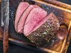

Schmorbraten

DESCRIPTION
This is the description of the recipe.
Zutaten
- 1kg Rinderbraten
- Ein bund karotten
- 1,5 Zwiebeln
- Tomaten ganz in der dose
- Pfeffer, Salz
- Knoblauchzehen
- Wein
Steps
- Ofen auf 180Grad vorheizen
- Karotten im SChmortopf als Bett auslegen
- Rinderbraten darauf legen
- Tomaten ausquetschen und auf dem Braten verteilen, auch der Saft aus der Dose
- KOnblauchzehen 5, auf dem Braten ausquetschen
- Wein darüber schütten bis braten zur hälfte oder zu 3/vierteln bedeckt ist
- 10 Umderhungen Pfeffer, 3 fingerspitzen Salz
- SChortopf schließen und für 3 Stunden in den ofen stellen